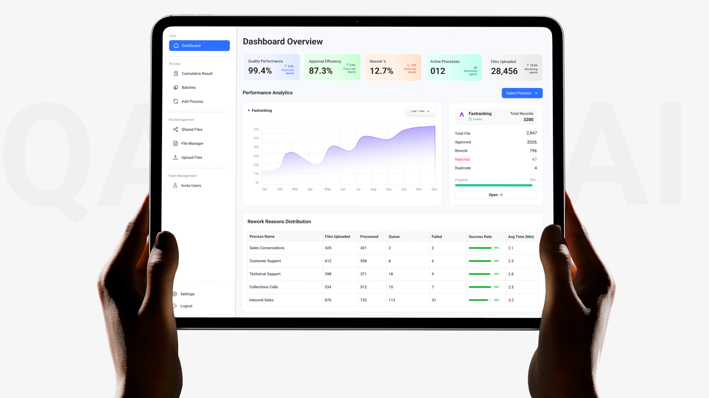
Building a custom CRM to move a UK Broadband agency from messy Excel sheets to AI-powered efficiency.
A prominent UK BPO was losing hundreds of man-hours to manual call auditing and fragmented Excel-based data management. Agents were using Excel to manage thousands of calls. It was hard to track, impossible to search, and management had no clear view of daily progress.
Main Problem: Quality Analysts (QA) had to listen to every single call manually to find errors. It was taking 8+ hours a day.
Mission: Design a centralized SaaS CRM that automates the Quality Analysis (QA) process using AI.
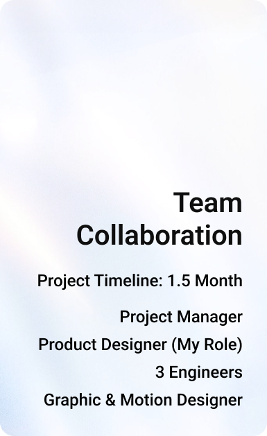
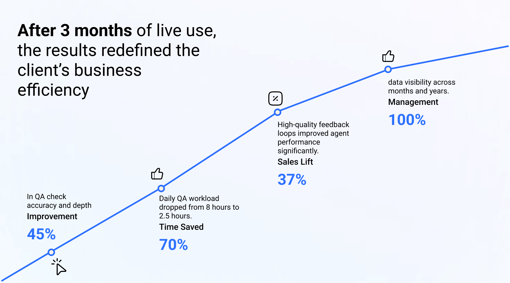
The image above isn’t just a timeline it’s the heartbeat of how we turned a broken workflow into an AI-powered success story. We divided our journey into three high-impact chapters.
Discovery, Design, and Delivery.
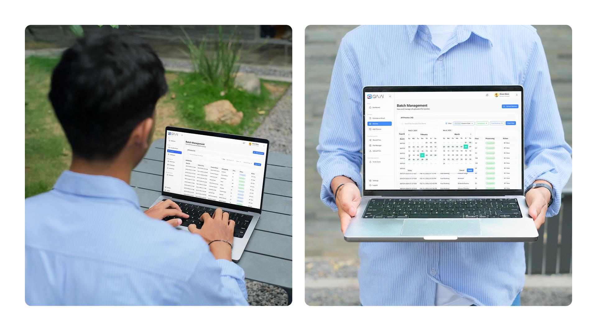
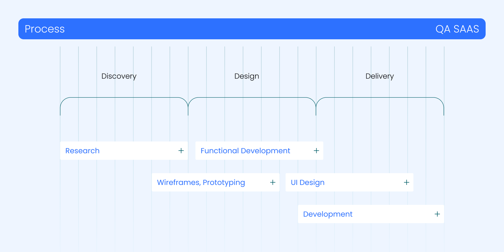
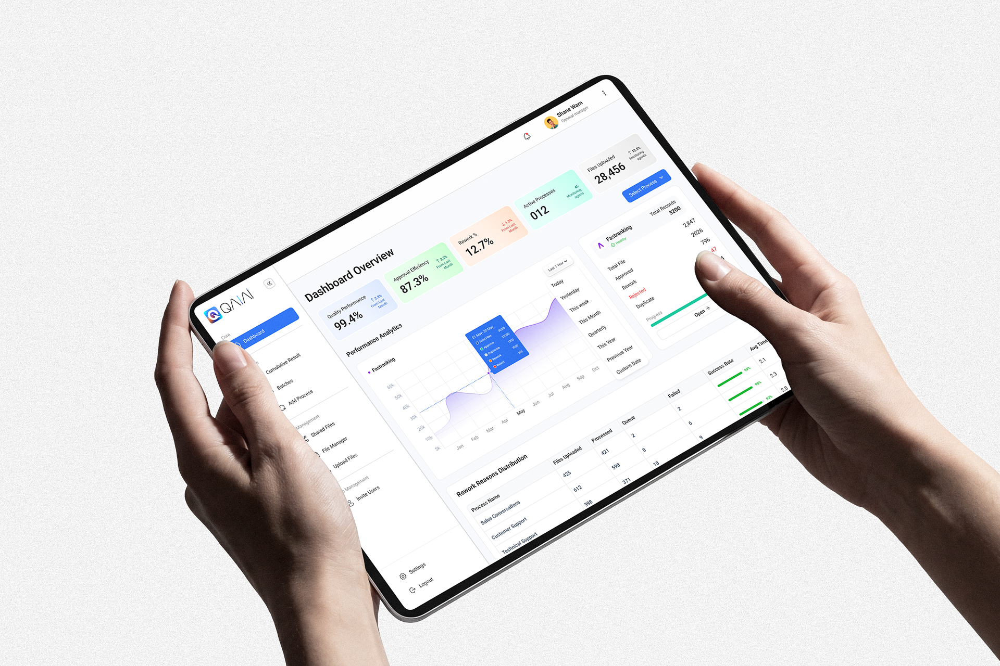
For us, research wasn’t about boring surveys. It was about finding the Hidden Friction that was slowing everyone down
I watched the QA Analysts work live. They were juggling 10 different Excel tabs while trying to listen to audio. It wasn't just work it was mental exhaustion. They didn't need more features they needed relief.
We sat with the UK stakeholders and challenged the old way of working. We asked one simple question Why are we paying humans to do what a machine can do in 2 seconds?
We audited the big CRM tools in the market. Most were just digital filing cabinets they could store data, but they couldn't think. We decided to build the Brain they were missing.
Before I started designing fancy screens or buttons in Figma, I sat down with my engineers. I wanted to make sure that the AI features I was imagining were actually possible to build.
There’s no point in designing a Ferrari if the engineers only have the parts for a Bicycle. By talking to them first
In short I made sure my imagination and their code were on the same page.
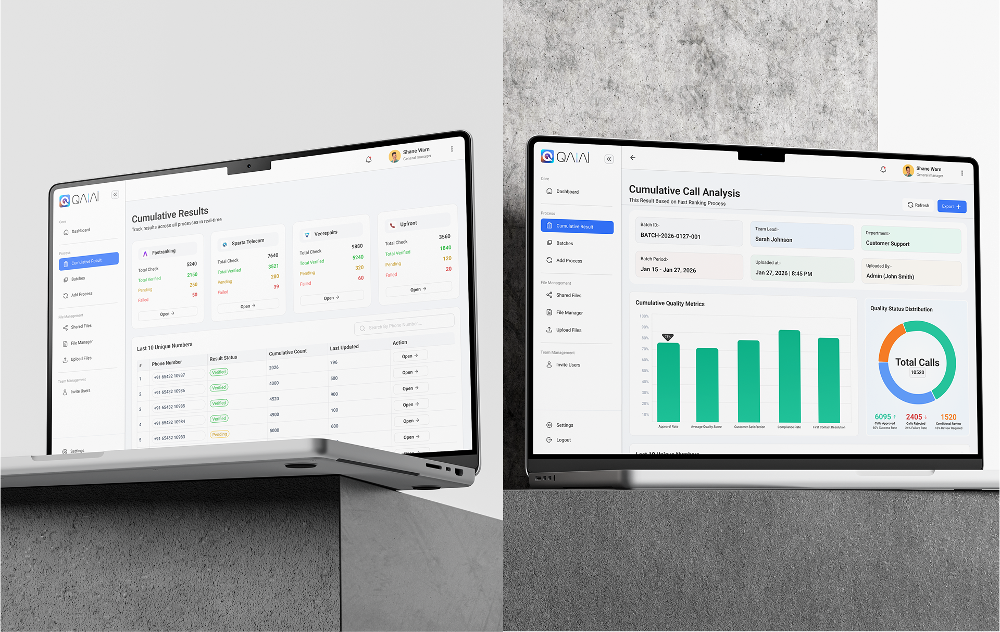
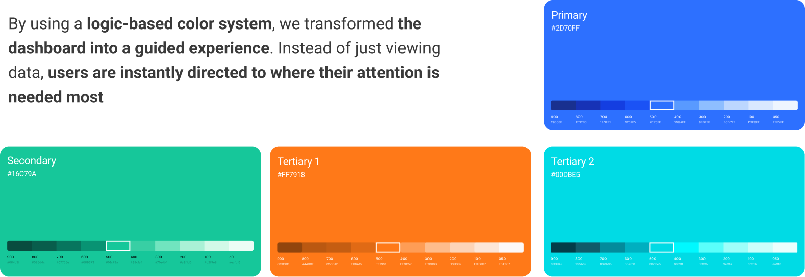
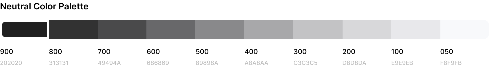
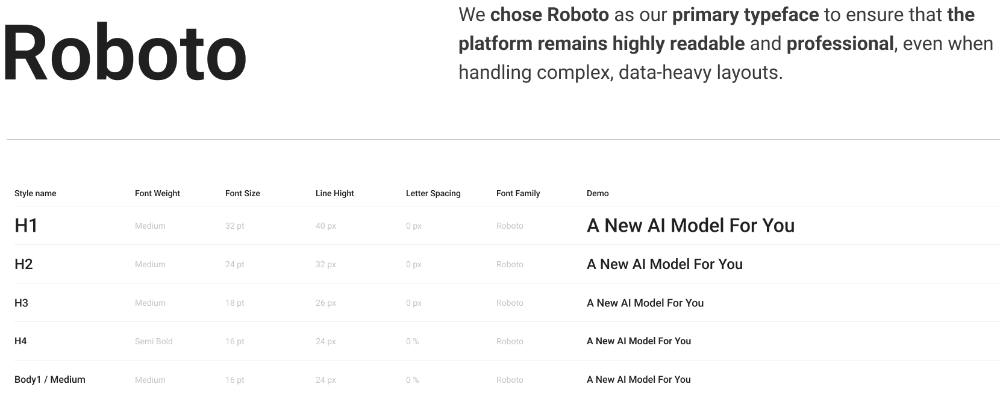
Countless options and endless tweaks to find that one Crisp logo
Before moving forward with the final high-fidelity screens, we dedicated significant time to defining the visual identity. After exploring numerous design options and going through several rounds of rigorous rework, we finally >elected the perfect logo that represents the intelligence and precision of the QA|AI platform
First Start with collecting the Mood boards (I Explore Pinterest, Dribble, logo books and multiple logo website for one Crisp Icon )
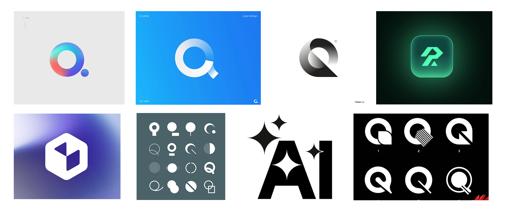
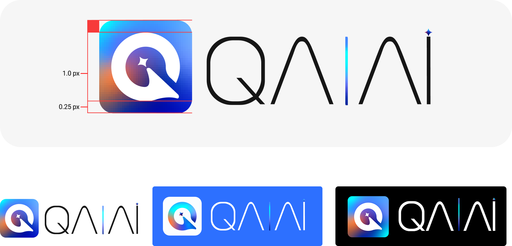
Before we touched a single pixel, we mapped the logic. We iterated relentlessly, stripping away complexity until the flow felt natural.
I integrated AI logic into the core UX. Using Gemini and Claude to brainstorm the backend variables, I designed the AI Analyst module a feature that doesn't just store calls but understands them. We solved the hardest problems during the wireframe stage to ensure the final UI would be Invisible yet powerful.
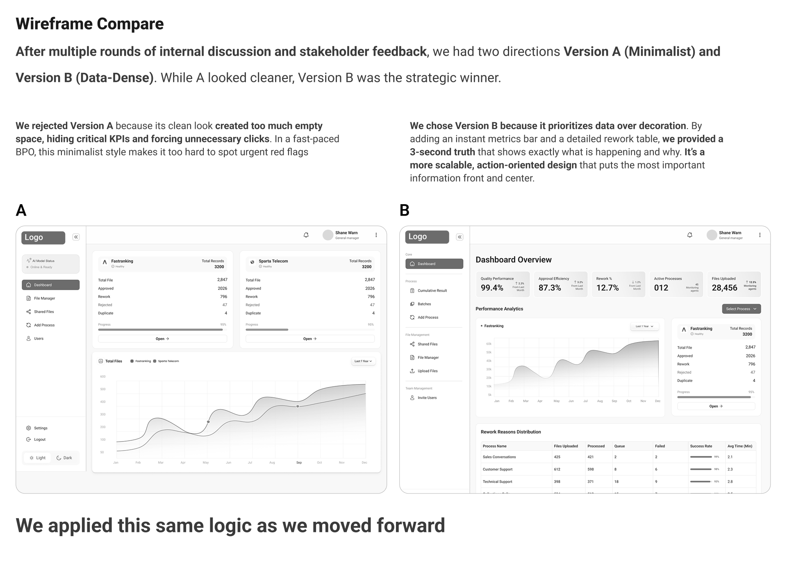
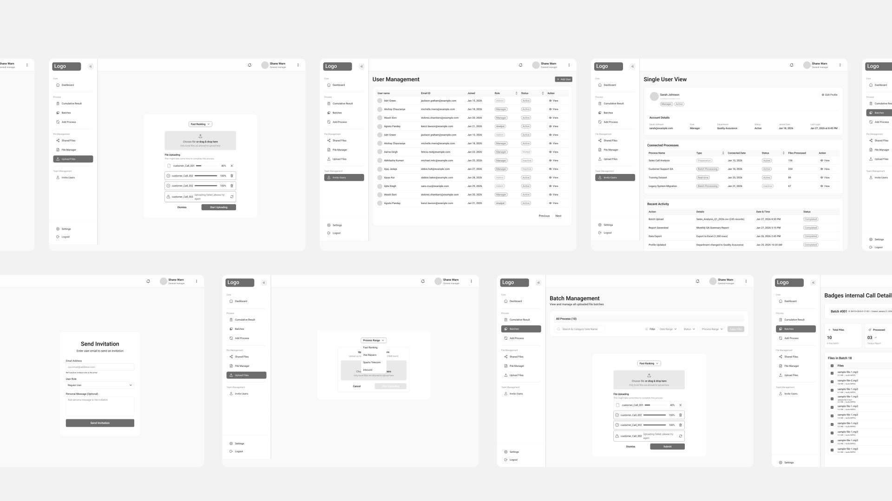
Once the logic was mapped, I transitioned into High-Fidelity Design , focusing on high information density and functional precision. I engineered a sophisticated AI Analyst Module that goes beyond data storage to provide deep semantic understanding of every interaction
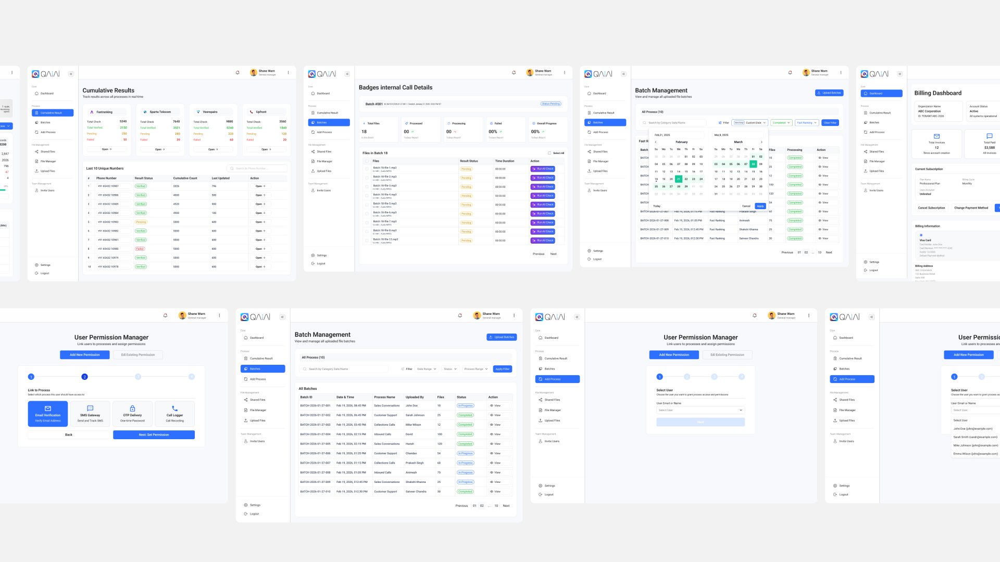
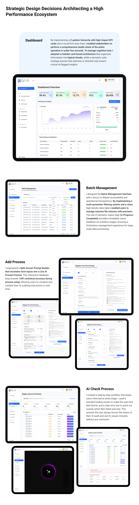
I learned how to architect and organize massive amounts of information such as Batch IDs, timestamps, and complex AI prompts ensuring the interface remains scannable and efficient without overwhelming the user.
I successfully mapped out the full lifecycle of a process by designing distinct UI states Pending, Processing (Loading), Success, and Failure. Mastering these transitions is essential for creating a reliable SaaS product.
By engineering the live prompt preview, I learned how to reduce user anxiety. Providing a real-time visualization of the AI's logic gives the user a sense of control and confidence in the system.
To support color-blind users, I will add Icons inside the tags (e.g a checkmark for success and an exclamation mark for failure), ensuring the UI is inclusive and usable for everyone.
I will add a Pre-flight Validation step. Before the user clicks Run AI, the system will scan for common issues (like low audio quality or incompatible bitrates) and show a System Readiness score. This prevents wasted compute time and improves the user’s trust in the tool.
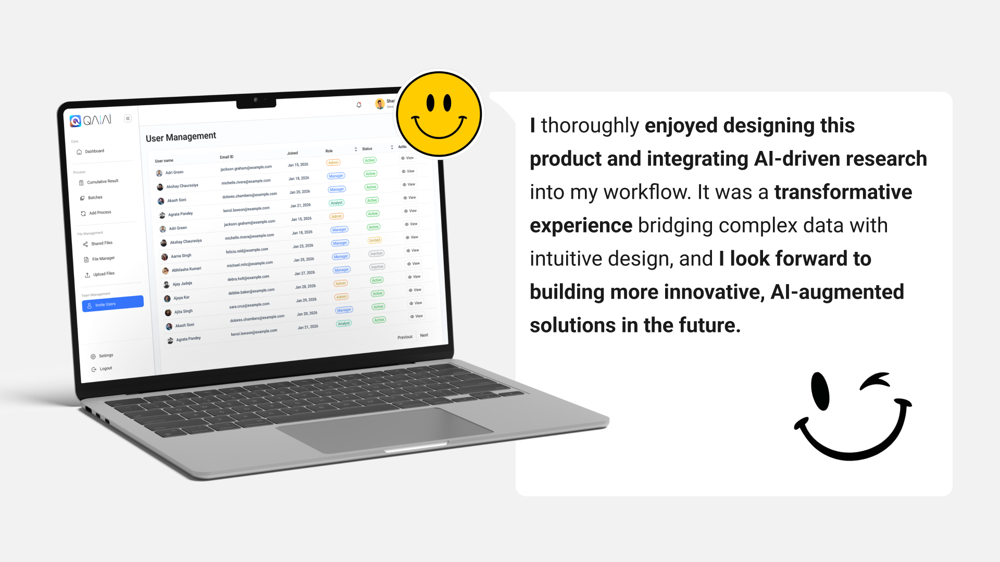